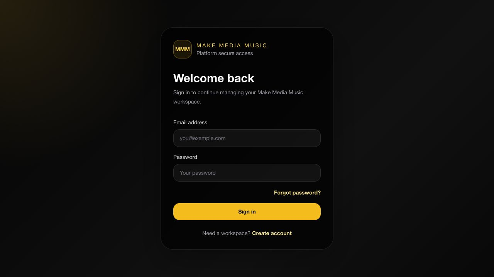

01 / MUSIC & BUSINESS OPERATIONS
Make Media Music Platform
An evolving operating workspace for music education, creative services, relationships, studio partnerships, catalog administration, and sync licensing. Originally developed as BE Music OS.
The product connects people, projects, opportunities, tasks, and music-business workflows in one application. Its repository documents workspace roles, tenant isolation, contact imports, and collaboration features.
Active MVP · Private source
The production entry page was verified. Workspace workflows require authorized access and were not independently retested for this portfolio.
The production entry page was verified. Workspace workflows require authorized access and were not independently retested for this portfolio.
Project perspective
Product direction: bring fragmented creative-business work into a coherent operating system. Technical emphasis: structured data, workspace permissions, workflow clarity, and iterative development. The showcase contains no customer records, private source code, or credentials.
